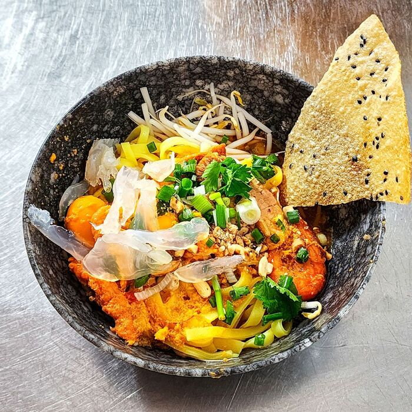

Mì Quảng
Sợi mì mềm bản to kết hợp nước dùng đậm vừa phải, tôm, thịt, trứng cút, đậu phộng và rau sống tạo nên hương vị khó quên. Bánh tráng nướng bẻ giòn là phần không thể thiếu.
Gợi ý: Thưởng thức vào buổi sáng hoặc trưa tại các quán mì Quảng địa phương.